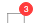
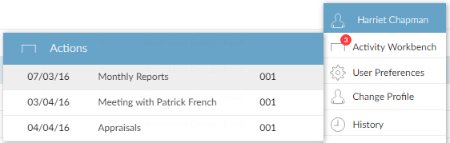
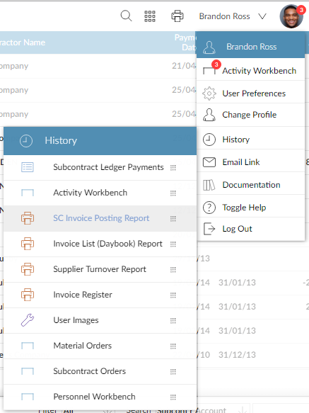

. You can click any of the links to display the corresponding report output. For more information about Report Status, see Report Status.
. You can click any of the links to display the corresponding report output. For more information about Report Status, see Report Status.Popup menus make it easier to access information in
The Unread Print Requests shows any print requests you have not yet read or displayed. To show the Unread Print Requests menu, move the mouse pointer over the Report Status button . You can click any of the links to display the corresponding report output. For more information about Report Status, see Report Status.

The User Menu provides various options as explained below. To show the User Menu, move the mouse pointer over your account image.

|
Activity Workbench | Opens your Activity Workbench in a new window. If you have new (unread) actions, the circle shows how many: . | |

|
User Preferences | Allows you to change your user preferences. | |
 |
Change Profile | Allows you to change you account image and display name. | |

|
History | Allows you to run one of the functions you used recently. | |

|
Email Link | Allows you to email the link for the current page to someone (they must have access to your |
|

|
Documentation | Opens the |
|

|
Help | Opens the side-frame help (see Side-Frame Help). | |

|
Minim |
Minim |
|

|
Restore Frames | Restores all open frames. | |

|
Logout | Logs you out of |
The New Actions menu shows any new (unread) actions on your workbench. To show the New Actions menu, move the mouse pointer over your account image, then over Activity Workbench in the User menu. You can click any of the links to go straight to that activity. For more information about the Activity Workbench, see Activity Workbench.

The History Menu shows the ten History in the User menu. You can click any of the links to go straight to that function. If you have permission, you can also add functions to your Desktop from the History menu; see Configuring Your
